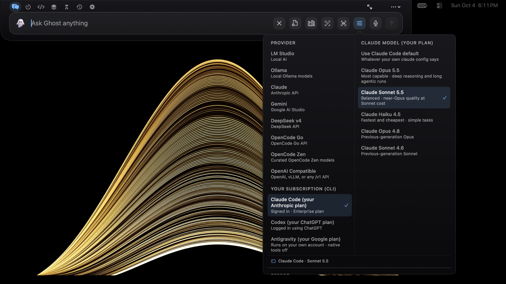

Any model
Use any model, including the plan you already pay for
Run Ghost on your Claude Code, Codex or Antigravity plan, on an API key for Claude, Gemini, DeepSeek or any OpenAI-compatible server, or on a model in LM Studio or Ollama that never leaves your Mac. You switch between them from one menu.
